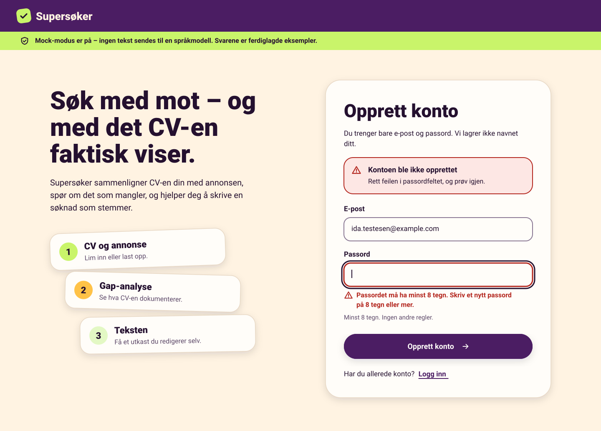
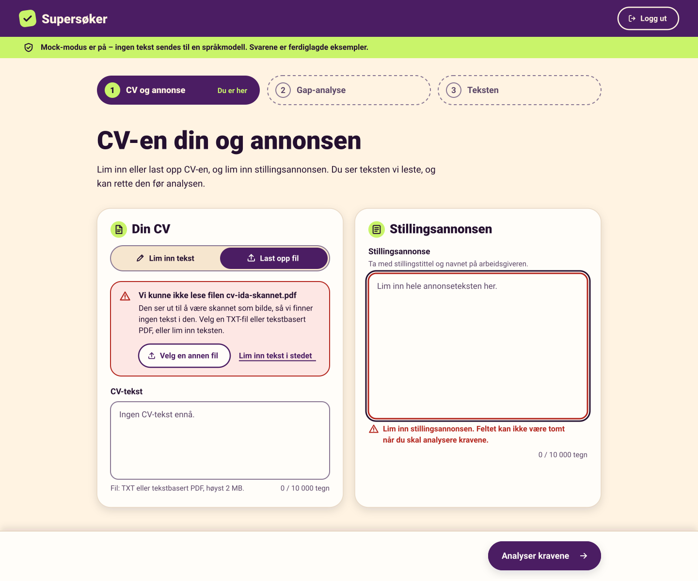
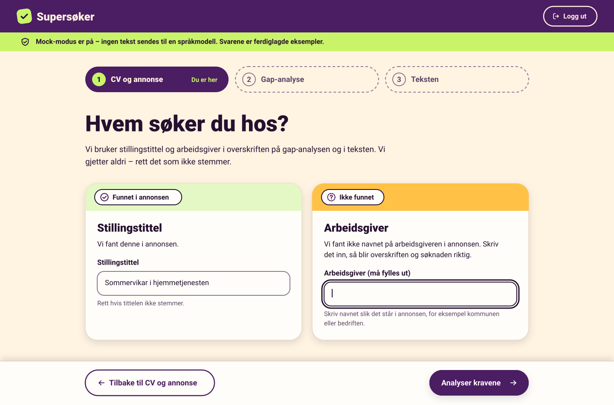
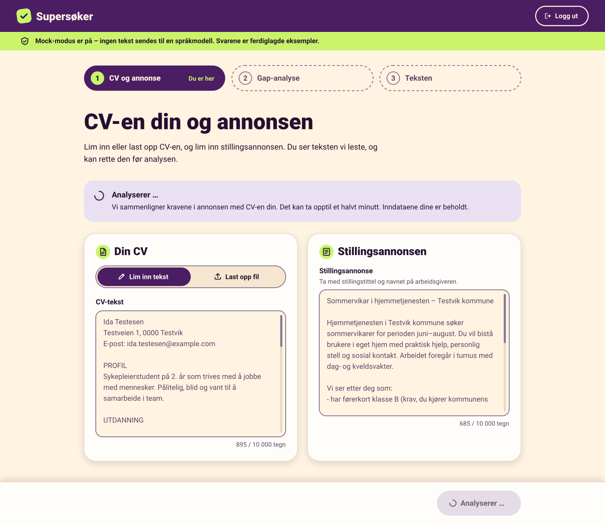
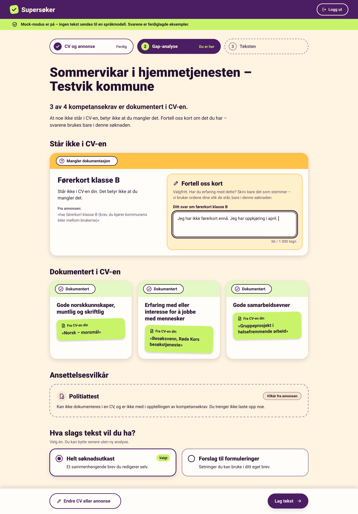
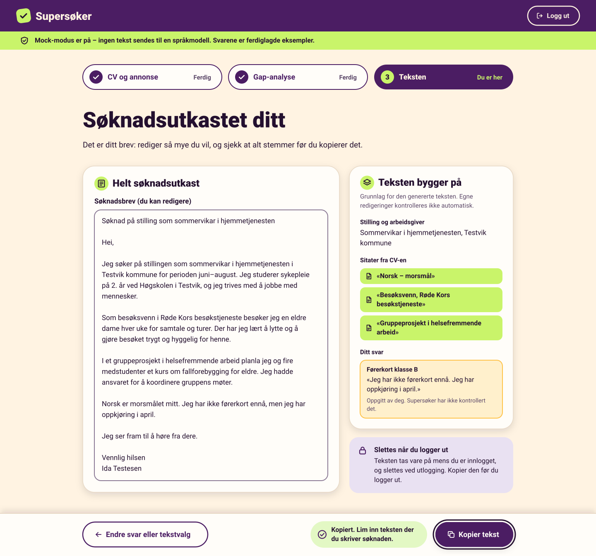
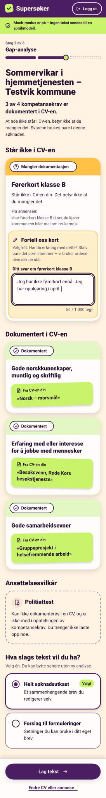

Konsept 3: Kort og mot
Mobil-først og oppmuntrende. Hvert krav er et stort kort: manglende krav har en «Fortell oss kort»-flate, dokumenterte krav har sitatet fra CV-en som et bevis-klistremerke.

01Logg inn
Innlogging med samme melding for feil e-post og feil passord. Testbrukeren vises som et hint som peker til README, uten passord i grensesnittet.
FR-2, FR-3

02Opprett konto
Valideringsfeil ved feltet og øverst i skjemaet. E-posten beholdes, passordet tømmes, og meldingen sier hvordan feilen rettes.
FR-1

03CV og annonse – tom
To store kort side om side, og et eget kort for å prøve med testpar 1. «Analyser kravene» ligger fast i handlingslinjen nederst.
FR-4, FR-7, FR-27

04CV og annonse – utfylt
Teksten fra cv-ida.pdf står i et redigerbart felt med tegnteller. En gul påminnelse ber brukeren sjekke kolonner og overskrifter.
FR-5, FR-7

05CV og annonse – feil
Filfeilen navngir fila og gir to veier videre. Det tomme annonsefeltet får melding, rød kant med varseltrekant og fokus.
FR-4, FR-6, FR-8

06Tittel og arbeidsgiver
Det som ble funnet, kan rettes. Det som mangler, etterspørres med en forklaring på hvorfor det trengs. Appen gjetter ikke.
FR-9

07Analyserer
Statusmeldingen sier hva som skjer og at inndataene er beholdt. Knappen er grå og deaktivert, så et dobbeltklikk ikke starter et nytt kall.
FR-30

08Gap-analyse
Kjerneskjermen. Det manglende kravet kommer først, med en stor «Fortell oss kort»-flate. Dokumenterte krav viser sitatet som et klistremerke, og vilkår og omskrivingsvalg har egne seksjoner.
FR-10–FR-15

09Gap-analyse – tomtilstander
Variant A bekrefter at alle kompetansekrav er dokumentert. Variant B sier at ingen tydelige krav ble funnet, og lister ingen krav.
FR-10, FR-14

10Søknadsutkast
Brevet står ved siden av «Teksten bygger på». Etter kopiering vises bekreftelsen i et grønt felt ved knappen.
FR-16, FR-19, FR-20

11Forslag til formuleringer
Forslagene står som en liste. Veiledningen har stiplet ramme utenfor teksten og blir ikke med når brukeren kopierer.
FR-17, FR-19

12Endre CV – bekreftelse
Dialogen lister hva som går tapt, også egenredigert tekst. «Avbryt» har fokus, så det trygge valget er nærmest.
FR-21

13Feil fra språkmodellen
Tidsavbrudd og ugyldig analyse vises med ikon, forklaring og «Prøv igjen». Inndataene står urørt under meldingen.
FR-30

14Leverandørvarsel
Det eneste arket i API-modus. Stripen blir oransje, og dialogen navngir leverandøren og hva som sendes, før noe sendes.
FR-25

15Øktvarsel og utlogging
Varselet etter 25 minutter sier hva som slettes, med «Fortsett økten». Etter utløp forklarer innloggingssiden at alt er slettet.
FR-22, FR-23

16Mobil – gap-analyse
Her er konseptet hjemme: ett kort i bredden, bare aktivt steg i steglisten, og en tommelvennlig handlingslinje nederst.
NFR-2

17Mobil – teksten
Brevet først, deretter «Teksten bygger på». «Kopier tekst» og bekreftelsen ligger fast nederst.
NFR-2